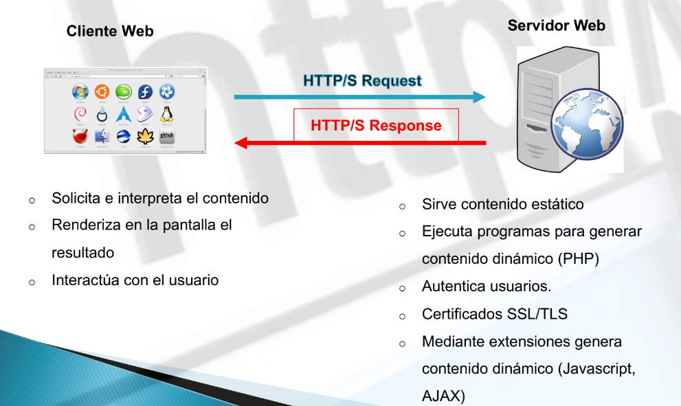
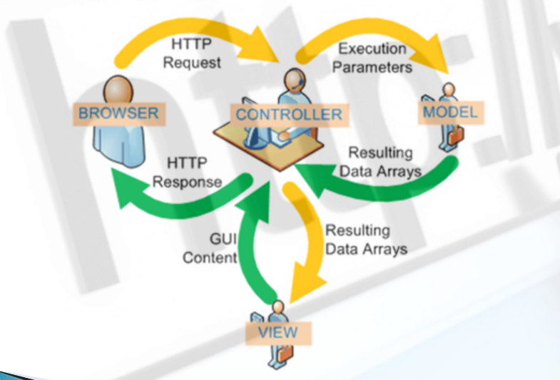

HTTP
El Protocolo de Transferencia de Hipertexto (HTTP) es un estándar de comunicación entre clientes (navegadores web) y servidores web para transferir información, como texto, gráficos, sonido, vídeo y otros archivos multimedia. Fue creado por Tim Berners-Lee en 1989 y actualmente se encuentra en su versión 1.1.
Protocolo HTTP

Modelo Vista Controlador

Tipos de solicitudes
- Solicitud GET 🡢 Método HTTP usado para solicitar datos de un servidor sin modificar su estado. Ideal para obtener y mostrar información.
- Solicitud POST 🡢 Método HTTP usado para enviar datos al servidor, normalmente para crear o actualizar recursos en él, alterando su estado.
HTTP y HTTPS
- HTTP 🡢 Es un protocolo para la transferencia de información en la web que no cifra los datos, por lo que puede ser vulnerable a interceptaciones.
- HTTPS 🡢 Es la versión segura de HTTP, que cifra la comunicación mediante SSL/TLS, protegiendo los datos contra accesos no autorizados.
Códigos de estado
- 1xx 🡢 Mensaje informativo.
- 2xx 🡢 Exito.
- 200 🡢 OK
- 201 🡢 Created
- 202 🡢 Accepted
- 204 🡢 No Content
- 3xx 🡢 Reedirección.
- 300 🡢 Multiple Choice
- 301 🡢 Moved Permanently
- 302 🡢 Found
- 304 🡢 Not Modified
- 4xx 🡢 Error del cliente.
- 400 🡢 Bad Request
- 401 🡢 Unauthorized
- 404 🡢 Forbidden
- 404 🡢 Not Found
- 5xx 🡢 Error del servidor.
- 500 🡢 Internal Server Error
- 501 🡢 Not Implemented
- 502 🡢 Bad Gateway
- 503 🡢 Service Unavailable
DNS
(Domain Name System): Es un sistema que traduce los nombres de dominio legibles por humanos (como www.ejemplo.com) a direcciones IP numéricas que las computadoras utilizan para identificarse en una red. Actúa como una "guía telefónica" de Internet, facilitando la conexión entre los usuarios y los servidores. Sin DNS, tendríamos que recordar direcciones IP en lugar de nombres de dominio.
Protocolo DNS
- Normalmente se utiliza servidores DNS de los ISPs.
- Funcionamiento:
- Los servidores DNS que reciben la petición, buscan en primer lugar si disponen de la respuesta en la memoria caché.
- Si lo encuentran, sirven la respuesta
- En caso contrario, inician la búsqueda en otros DNS.
- Una vez encontrada la respuesta, el servidor DNS guardará el resultado en su memoria caché para futuros usos y devuelve el resultado.
- Reenviadores 🡢 consultas a nombres DNS externos a servidores DNS normalmente fuera de la red.
Resolución directa y Resolución Inversa
- Resolución directa 🡢 permite traducir un nombre a una dirección IP.
- Resolución inversa 🡢 mediante la definición de registros PTR permite obtener el nombre que corresponde con una dirección IP. Se basa en el dominio inaddr.arpa. Se van añadiendo los diferentes números en la IP en sentido inverso.